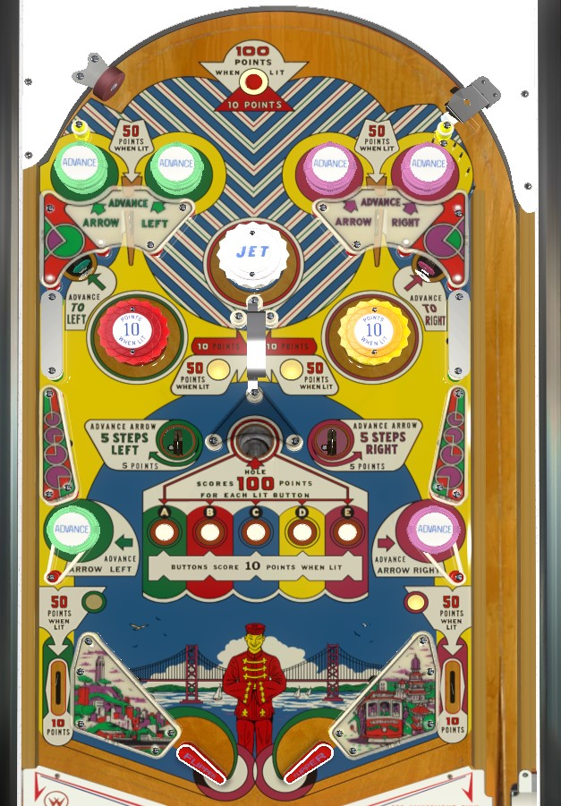

Use features labelled Advance Arrow Left and Advance Arrow Right to move the arrow dial on the backglass, specifically and especially the 5 Steps saucers in the center of the playfield. The dial has 5 zones, labelled A through E, and various features on the table are lit based on where the dial currently is and which zones have been entered on the current ball. Generally, it's best to light all 5 letters by entering all 5 zones, then intentionally draining through the center gobble hole for 500 points. In a 2-player game, you may wish to intentionally leave the dial on C to make it a bit more work for your opponent to light all 5 zones.
Scoring rules and feature availability is governed by what I call the Dial, a backbox animation where an arrow moves around a half-circle. There are 25 positions on the half-circle, divided into 5 positions on each of 5 lettered regions: the green A, the red B, the blue C, the yellow D, and the purple E. The arrow's position does not reset between any balls or games. Whenever the arrow enters a lettered region, that region lights up for the rest of the ball, which includes the region that arrow was in at the start of the ball.
The three green passive bumpers and the green standup target on the left side of the table score 1 point and move the arrow one position to the left. The left saucer in the center of the table scores 5 points and moves the arrow 5 positions to the left.
The three purple passive bumpers on the right side of the table and the upper right purple standup target score 1 point and move the arrow 1 position to the right, and the right saucer in the center of the table scores 5 points and moves the arrow 5 positions to the right.
Lighting a colour by having the arrow enter the corresponding colour's region on the backglass lights the respective rollover button in the center of the table for 10 points instead of 1. In addition:
The gobble hole in the center of the table ends the current ball in play, but scores 100 points for each lit colour. It is optimal to drain out the gobble hole as soon as it is lit for maximum value rather than trying to collect other miscellaneous points from around the table and risking a drain worth 0 or 50 points instead of 500.
Any time a 1-point switch is triggered, the game will alternate which pair of top passive bumpers are lit. When a pair of top bumpers are lit, the rollover lane between them scores 50 points instead of the usual 10. The white bumper labelled JET always scores 1 point.
There are no out lanes. The flippers back up directly to the slingshots, which always score 1 point. Out lanes score 10 points or 50 when lit by moving the arrow to the A (left) or E (right).
There is no end of ball or end of game bonus. There are no extra balls or playfield specials. Tilt ends game; in a 2-player game, only the player who tilted is disqualified, and the other player will get to play all of their remaining turns.